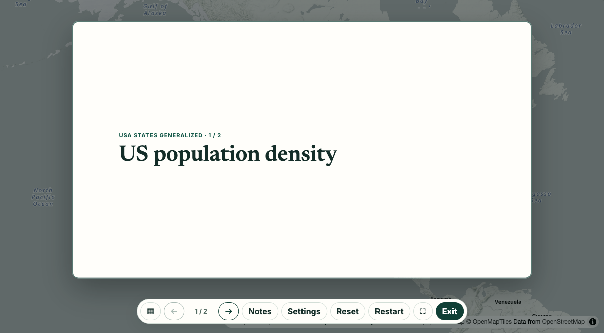

AI prompt example
A briefing
Turn US state population density into a short presentation.

Prompt
Turn US state population density into a short presentation.
Link
https://gismap.online/#map=json:%7B%22version%22%3A1%2C%22basemap%22%3A%22gray-vector%22%2C%22layers%22%3A%5B%7B%22url%22%3A%22https%3A%2F%2Fservices.arcgis.com%2FP3ePLMYs2RVChkJx%2Farcgis%2Frest%2Fservices%2FUSA_States_Generalized_Boundaries%2FFeatureServer%2F0%22%2C%22renderer%22%3A%7B%22type%22%3A%22choropleth%22%2C%22field%22%3A%22POP_SQMI%22%2C%22method%22%3A%22auto%22%2C%22ramp%22%3A%22purples%22%7D%7D%5D%2C%22briefing%22%3A%7B%22layerId%22%3A%22https%3A%2F%2Fservices.arcgis.com%2FP3ePLMYs2RVChkJx%2Farcgis%2Frest%2Fservices%2FUSA_States_Generalized_Boundaries%2FFeatureServer%2F0%22%2C%22selection%22%3A%7B%22useAll%22%3Atrue%7D%2C%22slides%22%3A%5B%7B%22template%22%3A%22title%22%2C%22title%22%3A%22US%20population%20density%22%7D%2C%7B%22template%22%3A%22key-numbers%22%2C%22title%22%3A%22At%20a%20glance%22%2C%22blocks%22%3A%5B%7B%22type%22%3A%22stat%22%2C%22stat%22%3A%22count%22%2C%22label%22%3A%22States%20and%20DC%22%7D%5D%7D%5D%7D%7DWhat the agent says
The count is computed when the briefing opens, and I added no figures of my own.
Status reached
loaded, checked 2026-11-01 in headless Chrome. Live services change, and intended features, filter and reopening were not separately verified.